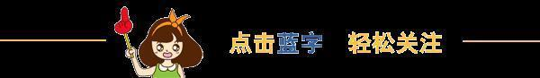

万用表的使用

使用方法： 首先要了解一些基础，比如： power 电源开关 HOLD锁屏按键, B/L一般是为， 其次要了解 V-或DCV 是挡的意思 V~或ACV挡的意思 A-或DCA挡的意思 A~或ACA是挡的意思， Ω是电阻挡的意思，画一个二极管的符号那个是二极管档也称蜂鸣档，F表示电容挡， H表示电感挡 hfe表示三极管电流放大系数测试挡 一般数字表会有四个插孔，分别是:VΩ孔，COM孔，mA孔，10A孔或20A孔。 测量电阻，电容，二极管，三极管，检查线路通断等，将红表笔插入VΩ孔，黑表笔插入COM孔。 测量mA级别的电流或μA级的电流将红表笔插入mA电流专用插孔，黑表笔插入COM孔。 测量高于mA级别的电流将红表笔插入10A或20A孔黑表笔插入COM孔，COM孔也称是专门插入黑表笔的插孔。 测量电压的时候，适当选择好，如果是测量的话，就要打到直流电压挡V-（DCV）如果测量的话就要打到交流电压挡V~（ACV）将红表笔插入VΩ孔，黑表笔插入COM孔，然后并联进电路测量电压，如果不知道被测信号有多大，则要选择最大测量。测量直流电的时候不比考虑正负极，因为数字表不像指针表，测量直流信号测量反了，表针反打，数字表只是会显示符号，说明信号是从黑表笔进入。 测量电流的时候，根据被测电流大小不同，选择插孔，如果测量小电流就要将红表笔插入mA孔，黑表笔插入COM孔。将红黑表笔串进线路中测量电流，如果测量出来显示”1“说明过，则要增大量程测量， mA孔一般会设置一个 200mA的，测量大电流的时候要将红表笔插入10A或20A孔黑表笔插入COM孔，10A孔或20A孔一般不设计保险，测量大电流的时候，一定要注意时间，正确测量时间应该是在10-15S，如果长的话，由于电流挡 或锰铜，过热引起阻值变化。 测量电阻的时候，首先要万用表打到电阻挡选择适当选择量程，如果不知道被测电阻阻值有多大，则应该选择最大量程，然后将红表笔插入VΩ孔黑表笔插入COM孔，接在电阻的两端，不分正负极，因为电阻没有正负极，如果测量中发现万用表显示”1“则要使用最大挡测量一遍，如果使用最大挡测量该电阻阻值还是”1“则说明该电阻开路，如果测量中发现电阻阻值为001，说明该电阻内部击穿，测量电阻的时候，首先先短接表笔测出表笔线的电阻值，一般在0.1-0.3Ω，阻值不能超过0.5Ω，超过了的话，说明也就是万用表电源电压9V偏低引起的，或者就是刀盘与电路板接触松动引起的，测量的时候不要用手去握表笔金属部分，以免进入，会引起。 测量二极管的时候要使用二极管档，数字表二极管档 VΩ和COM孔的为2.8V左右，将红表笔插入VΩ孔黑表笔插入COM孔，将红表笔接二极管正极，黑表笔接负极，测量出正向电阻值，反之测量二极管的反向电阻值，因为在数字表里红表笔接触内部电池正极带正电，而黑表笔接触内部电池负极，带负电，正好跟指针表相反，在指针表里电阻挡红表笔接触内部电池负极，黑表笔接触内部电池正极。 如果正向电阻值为300-600Ω 反向电阻值上1000，则说明管子是好的，如果正反向电阻值均为”1“说明管子开路，如果正反向电阻值均为001说明管子击穿，如果正反向电阻值差不多，则说明管子质量差。

信息部/黄治勇